Ono, Hyogo: things to do, food and stays
Ono · Hyogo
Ono
Highlighted on the Hyogo map.
Stay
ホテルルートイン小野
Hotel Route Inn Ono
Hotel in Shikichi, Ono with buffet meals and breakfast available.
小野向日葵ホテル
Ono Himawari Hotel
Dining
肉ベース
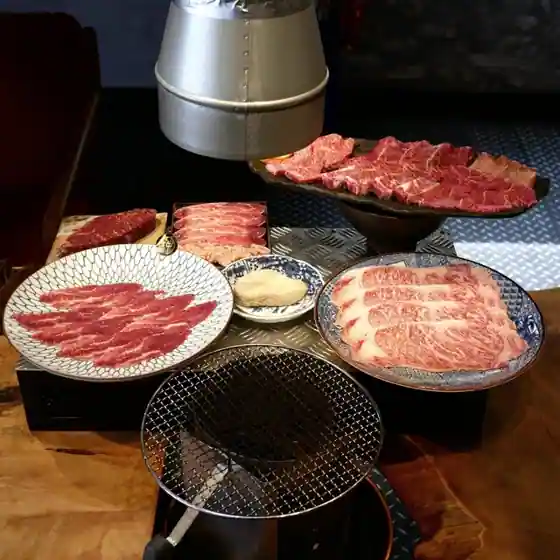
Niku Besu
好きやめん 総本店
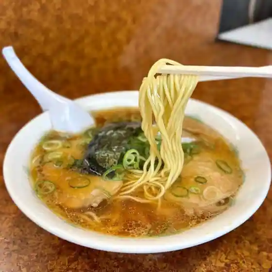
Suki Yamen So Hon
らんめん
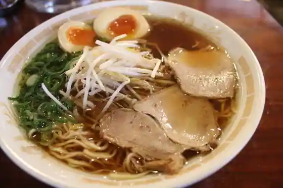
Ranmen
Eiger 小野店
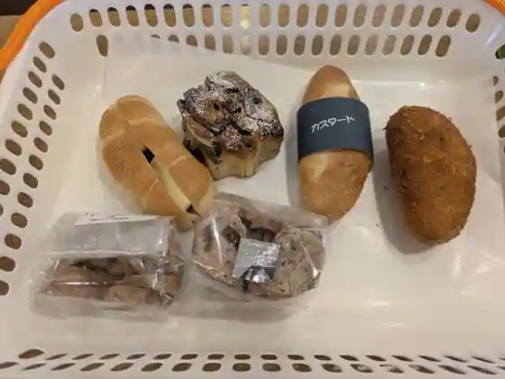
Eiger Ono
よしくら
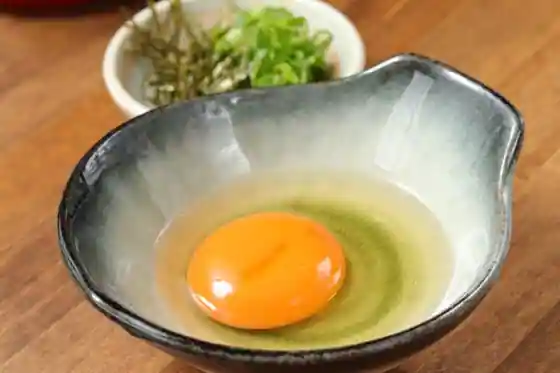
Yoshikura
カエモン
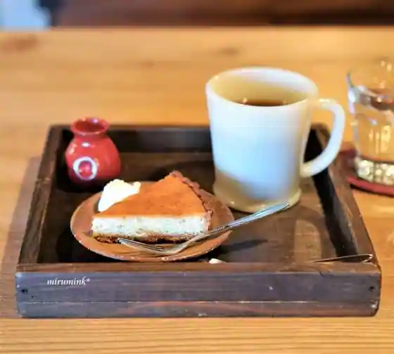
Kaemon
ぷらっと きすみの
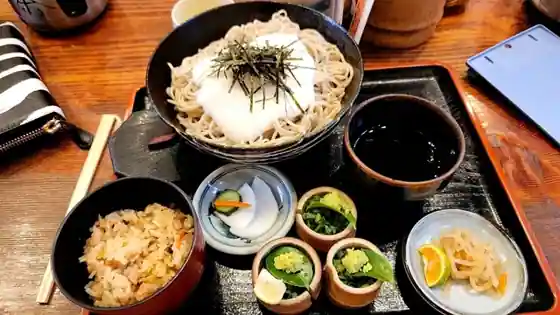
Puratto Kisumino
共進牧場レストラン ミルカーズ
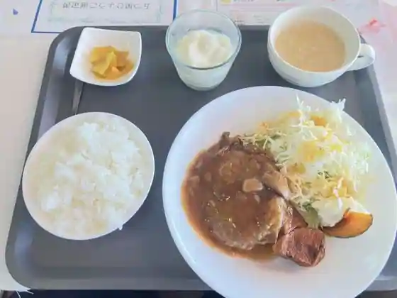
Kyoshin Bokujo Restaurant Mirukazu
松阪食堂 小野本店
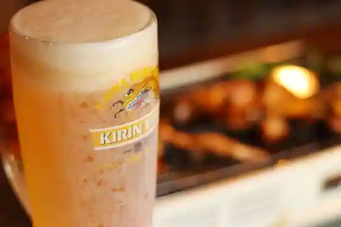
Matsusaka Shokudo Ono Hon
小野絶好調らーめん
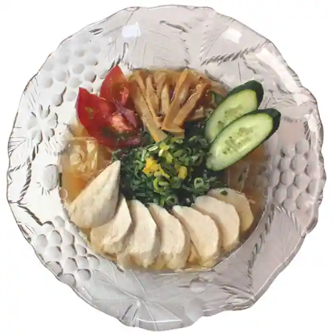
Ono Zekkocho Ramen
アルティジャーナ ロッソ
Aruteijana Rosso
prato cafe
prato cafe
パティシエゲンタロウ
Pateishiegentarou
そろばん亭
Soroban Tei
大和
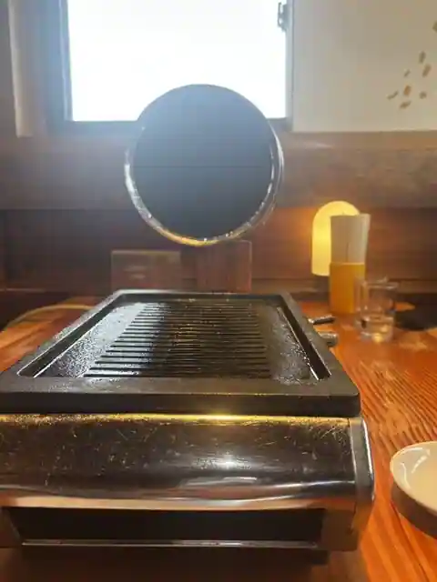
Yamato
バンビーノ
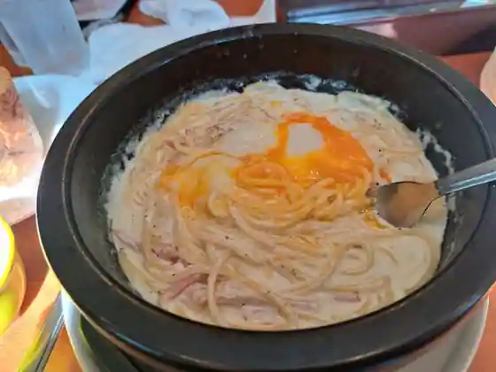
Banbino
小野グランドカントリークラブ レストラン
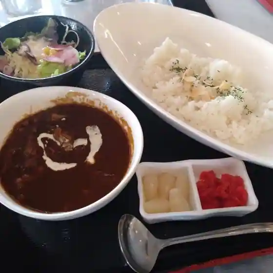
Ono Grand Kantorikurabu Restaurant
うどん職人 えびす庵
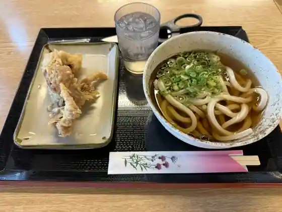
Udon Shokunin Ebisu Iori
純手打ち讃岐うどん すぎしん
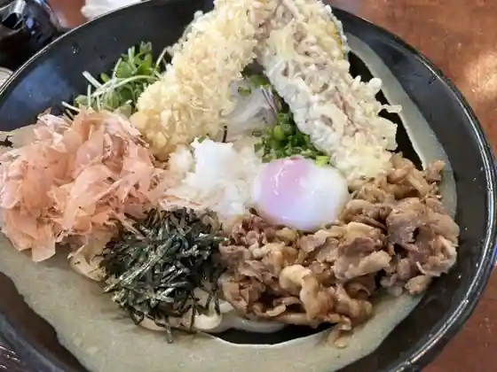
Jun Teuchi Chi Sanuki Udon Sugishin
OUJI CAFE
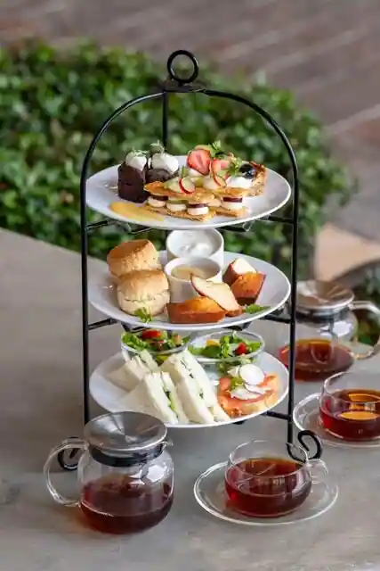
OUJI CAFE
GRIZZLY COFFEE & SUPPLY
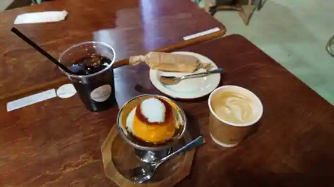
GRIZZLY COFFEE & SUPPLY
ローズウッドゴルフクラブ レストラン
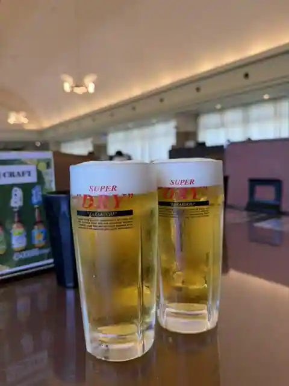
Rozuddogorufukurabu Restaurant
播磨カントリークラブ
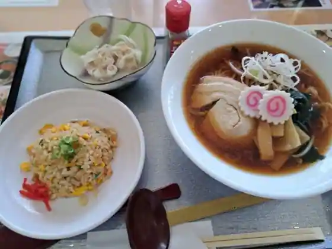
Harima Kantorikurabu
くるま焼肉店
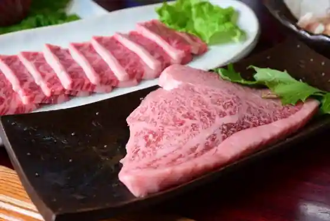
Kuruma Yakiniku
Sights
Himawari no Oka Park